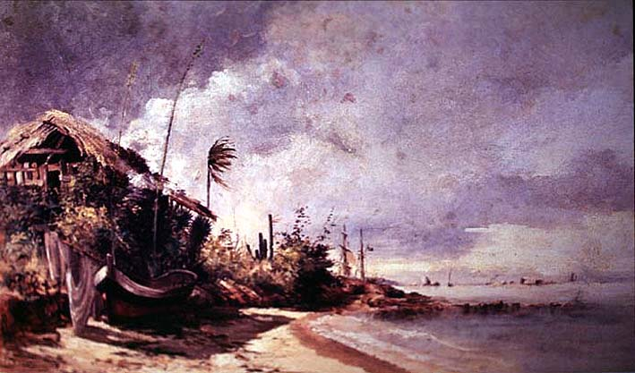

|
|  |
|
Antonio Parreiras, Canto de Praia
|
Parallel to this paradigmatic shift in the 'natural sciences', a more subtle but no less important one occurred in the visual arts, where the landscape, a genre formerly confined to the illustration of scientific works and travelogues, or merely constituting the stage or background for historical scenes, gradually gained in prestige until becoming the centrepiece of a truly 'national art'. Indeed, this was the creed of several of the artists and critics assembled in the Argentine 'Sociedad Estímulo de Bellas Artes' and 'El Ateneo', from which the first significant generation of national artists, the so-called 'Generación del Ochenta', emerged. Around the same time, during the mid-1880s, a group of young Brazilian painters decided to return their scholarships at the Imperial Academy of Arts and follow their professor, the German landscape artist Johann Georg Grimm, across Guanabara Bay o Niterói, to paint the local landscape directly from nature rather than, as the Academy prescribed, in the studio and according to French neoclassical and academicist canons. One of the most significant and profuse members of the group was Antonio Parreiras (1860-1937), whose work can today be seen in his former home at Niterói, where members of the Grimm group would meet to compare and discuss their work.
|